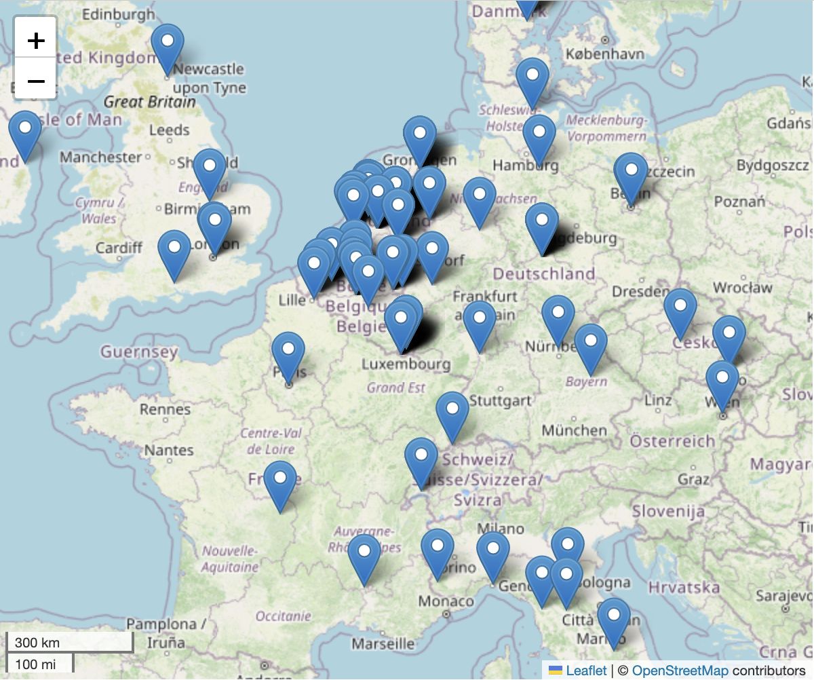

Where do conference participants travel from to reach Maastricht? We
would also like to extend a warm welcome to our guests from outside
the Benelux region! 💡 Click on the map to access
participant details.

Take a first look at the word frequency statistics from the
conference abstracts and see how digital humanities topics are
distributed across the conference papers.
Text, historical and narrative are among the
ten most frequently occurring words in the conference abstracts. How
successful was an LLM in extracting the time frames related to the
research corpus data mentioned in the abstracts? See how historical
research papers at this conference span a timeframe of almost 3,000
years! 💡 The timeline is plotted along the X-axis. To
access the research abstracts, simply hover over the time bars.
How are topics and conference papers related? Traverse the
network graph to discover the connections between research
projects and DH topics, and uncover additional research projects
relevant to those topics.